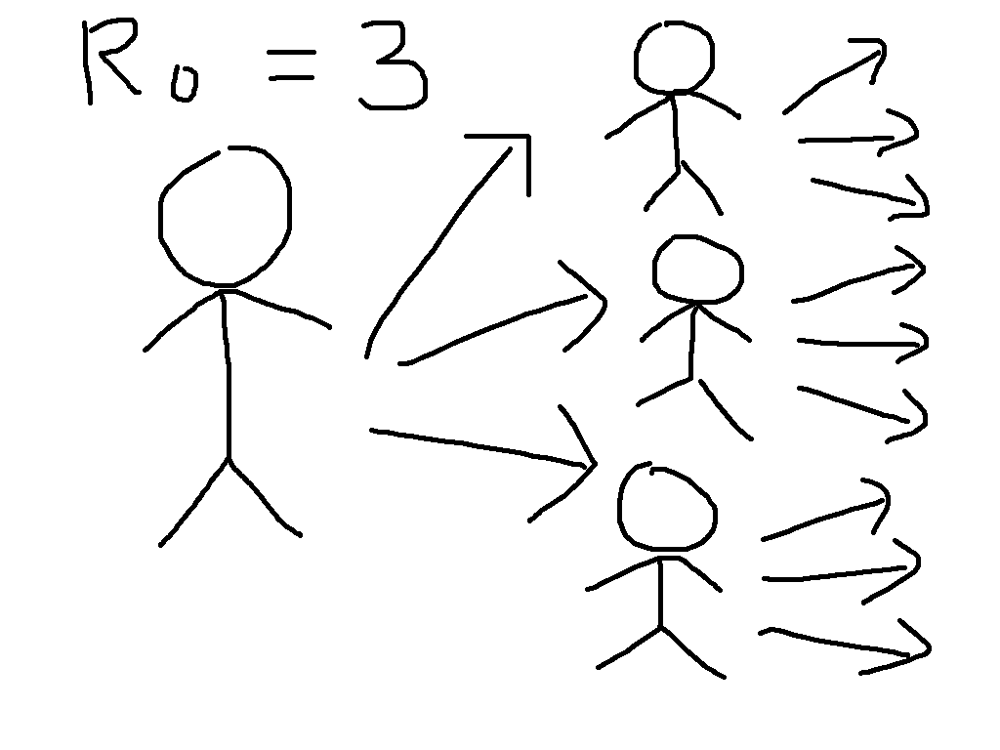
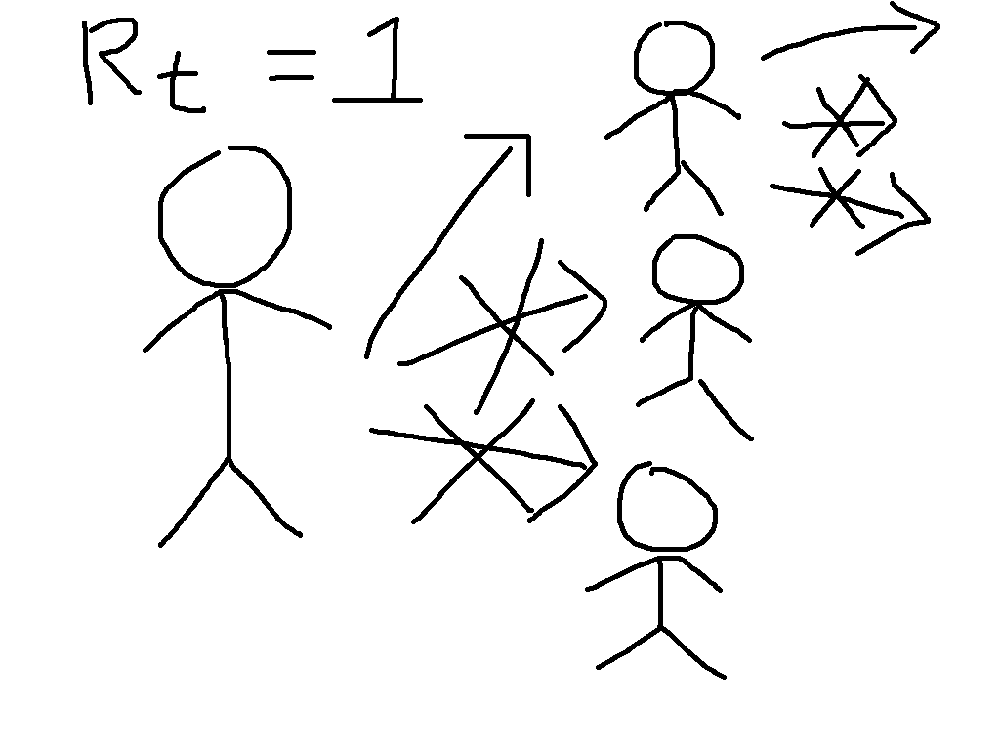
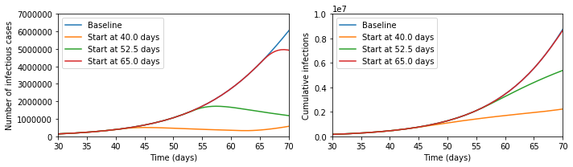
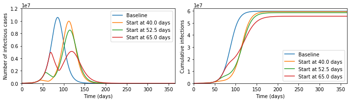

The current coronavirus outbreak (COVID-19) has raised questions about herd
immunity, social distancing measures, and the relationship between these. In
particular, at time of writing the following Tweet has thousands of retweets
and likes.
I think that this presents an incomplete picture of the policy considerations.

To see why, let us start by defining the most important concept in epidemic
modelling, the basic reproduction number \(R_0\). This is equal to
the average number of infections caused by a case early in the epidemic, so that
for \(R_0 = 3\), the early transmission tree might look something like
the cartoon on the left. This exhibits the exponential growth that is so worrying
at present. We have first one case, then three, then nine, then 27, then ...
Now suppose that immunity has been built up, either through vaccination or by
illness followed by recovery, so that two thirds of people are immune. This
means that each case will have three contacts that would have caused infection
in the absence of immunity, but on average two of these will be immune and so
the situation looks more like the cartoon on the right. We say that the
reproduction number is reduced from its basic value to \(R_t = 1\).
While the individuals in the cartoon with a crossed out arrow pointing towards
them are literally immune, the people that they would have infected benefit
from herd immunity. They can be infected if exposed, but will not be. This
is particularly beneficial to the people who are particularly vulnerable to the
disease, who might die if they catch it. The general formula for herd immunity
is that when over \((1 - (1/R_0))\times 100\%\) of the population
is immune, then the epidemic will start to die out.
Now suppose we simulate a more realistic scenario. The Python code for this is
at the bottom of this post, and it is much simpler than the models that are
typically used to guide policy, but captures the basic phenomena of interest.
In particular, we suppose that we can reduce transmission through social
distancing measures like closing schools and workplaces, but that this is only
possible for three weeks. This represents the fact that the costs of not
educating children and not doing other activities can become quite large over
time, and in some cases can lead to levels death and illness that could exceed
those due to the unchecked epidemic. Running the epidemic model with these
interventions gives the following results for cases at a given moment and total
cases over time.

It seems that the Tweet was right - look at the difference the early intervention
makes! But now let us zoom out of the graph; then the picture looks like the below.

In fact, the later intervention dramatically reduces the burden on the healthcare
system, cutting in half the maximum numbers ill and potentially needing treatment
at any one time, and significantly reduces the final number infected, which the
earlier interventions fail to do.
The reason that this happens is that social distancing measures do not lead to herd
immunity, so once they are lifted the epidemic starts again. In the absence of a
vaccine, it is therefore meaningless to speak about whether a policy 'aims' to get
herd immunity or not, since every country in the world will reach herd immunity
unless it is able to implement social distancing for an indefinite period of time.
What mitigation policies should aim to do, therefore, is to reach herd immunity
with the minimal human cost. This will be extremely difficult, and at every
stage we will be dealing with large uncertainties. I would not want to be the
person who ultimately made the policy decisions. But to say that early
interventions are always better is incorrect.
# Pull in libraries needed
%matplotlib inline
import numpy as np
from scipy import integrate
import matplotlib.pyplot as plt
# Represent the basic dynamics
def odefun(t,x,beta0,betat,t0,t1,sigma,gamma):
dx = np.zeros(6)
if ((t>=t0) and (t<=t1)):
beta = betat
else:
beta = beta0
dx[0] = -beta*x[0]*(x[3] + x[4])
dx[1] = beta*x[0]*(x[3] + x[4]) - sigma*x[1]
dx[2] = sigma*x[1] - sigma*x[2]
dx[3] = sigma*x[2] - gamma*x[3]
dx[4] = gamma*x[3] - gamma*x[4]
dx[5] = gamma*x[4]
return dx
# Parameters of the model
N = 6.7e7 # Total population
i0 = 1e-4 # 0.5*Proportion of the population infected on day 0
tlast = 365.0 # Consider a year
latent_period = 5.0 # Days between being infected and becoming infectious
infectious_period = 7.0 # Days infectious
R0 = 2.5 # Basic reproduction number in the absence of interventions
Rt = 0.75 # Reproduction number in the presence of interventions
tend = 21.0 # Number of days of interventions
beta0 = R0 / infectious_period
betat = Rt / infectious_period
sigma = 2.0 / latent_period
gamma = 2.0 / infectious_period
t0ran = np.array([-100, 40, 52.5, 65])
def mylab(t):
if t>0:
return "Start at " + str(t) + " days"
else:
return "Baseline"
sol=[]
for tt in range(0,len(t0ran)):
sol.append(integrate.solve_ivp(lambda t,x: odefun(t,x,beta0,betat,t0ran[tt],t0ran[tt]+tend,sigma,gamma),
(0.0,tlast),
np.array([1.0-2.0*i0, 0.0, 0.0, i0, i0, 0.0]),
'RK45',
atol=1e-8,
rtol=1e-9))
plt.figure(figsize=(10,3))
plt.subplot(1,2,1)
for tt in range(0,len(t0ran)):
plt.plot(sol[tt].t,N*(sol[tt].y[3] + sol[tt].y[4]).T, label=mylab(t0ran[tt]))
plt.xlim([30,70])
plt.ylim([0,7e6])
plt.xlabel('Time (days)')
plt.ylabel('Number of infectious cases')
plt.legend()
plt.subplot(1,2,2)
for tt in range(0,len(t0ran)):
plt.plot(sol[tt].t,N*sol[tt].y[5].T, label=mylab(t0ran[tt]))
plt.xlabel('Time (days)')
plt.ylabel('Cumulative infections')
plt.legend()
plt.xlim([30,70])
plt.ylim([0,1e7])
plt.tight_layout()
plt.show()
plt.figure(figsize=(10,3))
plt.subplot(1,2,1)
for tt in range(0,len(t0ran)):
plt.plot(sol[tt].t,N*(sol[tt].y[3] + sol[tt].y[4]).T, label=mylab(t0ran[tt]))
plt.xlim([0,tlast])
plt.ylim([0,1.2e7])
plt.xlabel('Time (days)')
plt.ylabel('Number of infectious cases')
plt.legend()
plt.subplot(1,2,2)
for tt in range(0,len(t0ran)):
plt.plot(sol[tt].t,N*sol[tt].y[5].T, label=mylab(t0ran[tt]))
plt.xlabel('Time (days)')
plt.ylabel('Cumulative infections')
plt.legend()
plt.xlim([0,tlast])
plt.ylim([0,6.2e7])
plt.tight_layout()
plt.show()